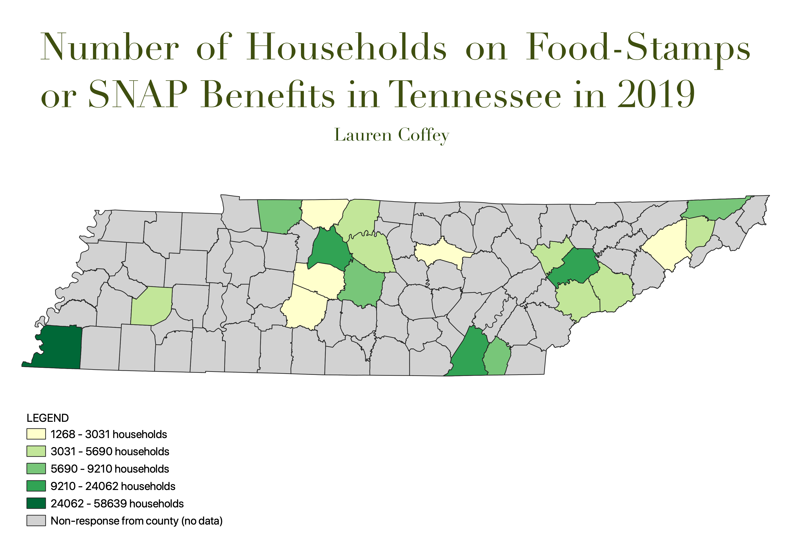

Homework 7: Census data choropleth
Lauren Coffey
I researched the number of households in Tennessee on food stamps or SNAP benefits. The map depicts the quantity of households per county. What I found interesting (and a little frustrating) about this data was the lack of response from many counties. If you research the state, you will notice that the counties that responded to the survery are those surrounding state's four largest large cities (Nashville, Memphis, Knoxville, and Chattanooga), this is shown through almost four distinc clusters on the map. The suburbs surrounding greater Nashville have lower rates of governmental assistance, while the counties nearing the Appalachian Mountains have higher. This has been a historically impoverished area due to many factors like isolation. Memphis's high rates of assitance are expected, as it is a larger city but it has high crime and a low median income.

Data used for this project
Link to cleaned CSV dataset
Link to geoJSON